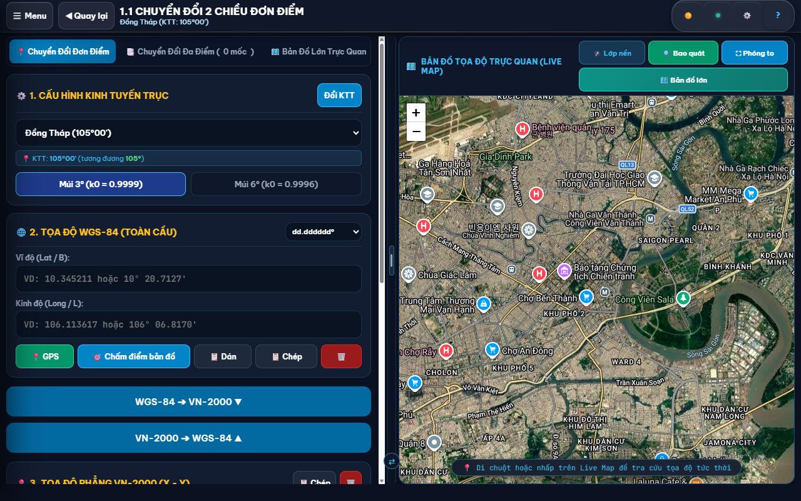
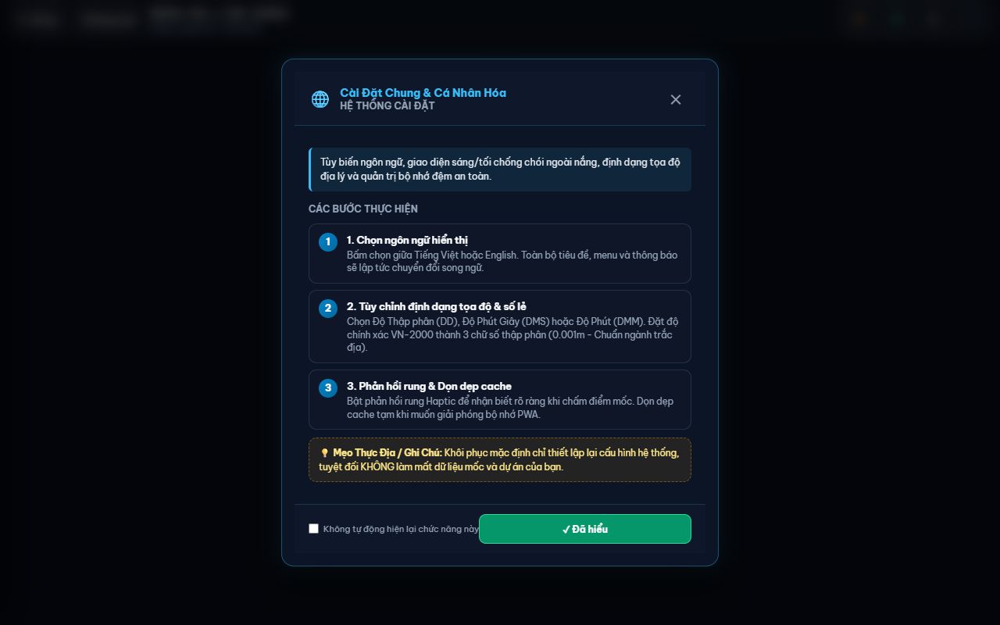
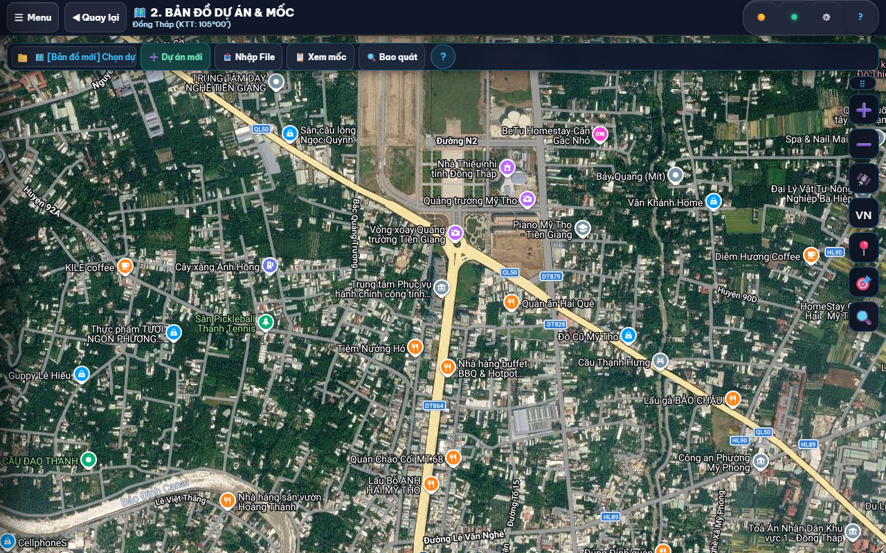
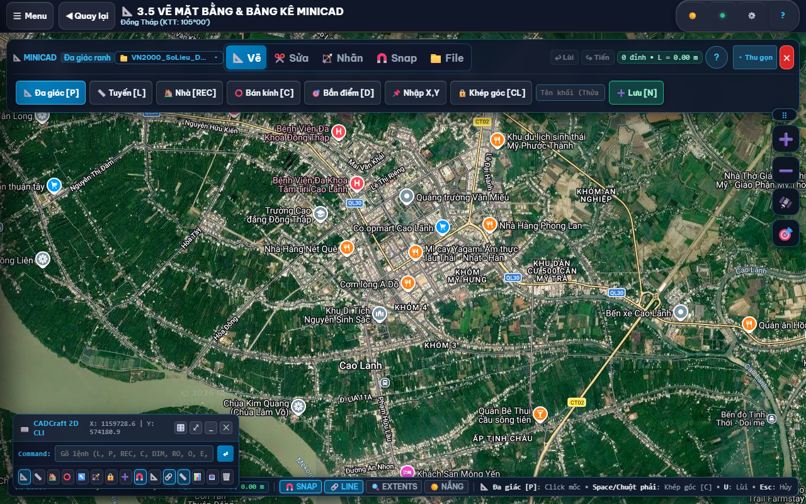
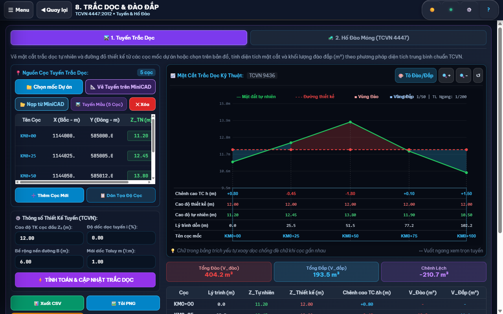

Sổ tay kỹ thuật thực chiến dành riêng cho kỹ sư đo đạc, cán bộ trắc địa địa chính và giám sát công trường. Mọi bước thực hiện đi thẳng vào thao tác máy, nêu rõ thông số cụ thể, chỉ ra cạm bẫy sai số thực tế kèm ảnh chụp giao diện khổ lớn không che khuất.
✓ Tiêu chuẩn QĐ 05/2007/QĐ-BTNMT✓ Độ chính xác Millimeter (0.001m)✓ 100% Hoạt động ngoại tuyến (Offline)✓ Tương thích AutoCAD & Civil 3D
01GIAO DIỆN & TỔNG QUAN
📱 Tổng Quan Giao Diện & Thanh Điều Hướng Nhanh
Bố cục công trường tối ưu cho thao tác một tay trên điện thoại và mở rộng đa cửa sổ trên máy tính bảng hoặc laptop. Tương phản cao, chữ to, rõ phím chức năng.
1
Thanh Menu Trên Cùng (Header Control Center)
Nhấp nút ☰ Menu để duyệt nhanh toàn bộ cây thư mục 14 phân hệ. Nút ☀️ Đổi Theme đảo tức thì giữa nền tối chống mỏi mắt và nền sáng chống lóa ngoài trời nắng. Cạnh đó, nút 🛰️ GPS bật/tắt định vị vệ tinh, nút ⚙️ Cài đặt và nút ? mở hướng dẫn ngữ cảnh ngay tại màn hình đang mở.
2
Thanh Tác Vụ Đáy Màn Hình (Taskbar Dock)
Thanh đáy ghim sẵn 4 tác vụ cốt lõi: Trang Chủ, Chuyển Đổi, Bản Đồ và Sổ Đo. Cần đổi tính năng khác? Hãy bấm giữ vào thanh dock hoặc mở menu Cài Đặt Ghim để thay bằng MiniCAD, Cắm Mốc hoặc Camera tùy ý đồ thi công.
💡 Phím tắt nhanh: Khi đang ở bất kỳ màn hình nào, bấm phím F1 hoặc nút tròn ? ở góc phải trên cùng để mở ngay cẩm nang hướng dẫn riêng của chức năng đó.
02CHUYỂN ĐỔI TỌA ĐỘ
🔄 Chuyển Đổi Tọa Độ Đơn Điểm 2 Chiều & Tra Cứu Vệ Tinh
Tính toán chuyển đổi qua lại giữa tọa độ phẳng trắc địa VN-2000 (X, Y) và tọa độ địa lý quốc tế WGS-84 (Lat, Lng). Thuật toán Gauss-Krüger chuẩn hóa theo Quyết định 05/2007/QĐ-BTNMT, sai số dưới 1mm.
CHUYỂN ĐỔI 2 CHIỀU ĐƠN ĐIỂM & BẢN ĐỒ VỆ TINH

1 Khung chọn Tỉnh & Kinh tuyến trục cục bộ
2 Ô nhập cặp tọa độ X (Bắc) và Y (Đông)
3 Nút Chuyển Đổi & Nút Đảo Trục chống lệch
4 Mốc hiển thị trực quan trên nền ảnh vệ tinh Google Earth
1
Bước 1: Chọn Tỉnh thành và Múi chiếu thi công
Nhấp vào ô danh sách địa phương, chọn tỉnh thành nơi đặt công trình (ví dụ: Đồng Tháp - KTT 105°00', Múi 3°). Ứng dụng tự động khóa kinh tuyến trục tương ứng. Thông số này được lưu lại cho mọi lần đo tiếp theo, không lo mất cấu hình.
2
Bước 2: Điền hoặc Dán tọa độ cần quy đổi
Điền giá trị X (trục Bắc, 7 chữ số: >1.000.000m) và Y (trục Đông, 6 chữ số: >500.000m). Nhận số liệu qua tin nhắn Zalo hay ghi chú? Chỉ cần sao chép rồi bấm nút 📋 Dán. Hệ thống tự động tách số, loại bỏ ký tự lạ và tự hoán đổi vị trí nếu bạn dán ngược thứ tự Y trước X sau.
3
Bước 3: Nhận kết quả và kiểm tra thực địa trên vệ tinh
Bấm nút Chuyển Đổi. Cặp tọa độ đích WGS-84 (Vĩ độ Lat, Kinh độ Lng) hiện ra ngay lập tức kèm độ chính xác 6 chữ số thập phân. Bấm nút Bản Đồ Lớn Trực Quan hoặc vuốt bảng kết quả lên để thấy điểm mốc ghim chính xác trên nền ảnh vệ tinh Google Earth sắc nét.
💡 Kinh nghiệm nhận biết trục tọa độ: Lưới chiếu VN-2000 quy ước trục X là trục Bắc luôn mang 7 chữ số (từ 900.000m đến 2.500.000m). Trục Y là trục Đông luôn mang 6 chữ số (từ 400.000m đến 650.000m). Nhập ngược trục sẽ làm điểm mốc văng xa hàng trăm cây số ra ngoài biển Đông. Hãy để ý cảnh báo màu đỏ nếu hệ thống phát hiện số lượng chữ số bất thường.
03XỬ LÝ DỮ LIỆU EXCEL
📊 Chuyển Đổi Hàng Loạt Từ Bảng Excel & Tự Đảo Trục Chống Lệch
Xử lý đồng loạt hàng trăm điểm mốc chỉ bằng một cú dán bảng. Tự động nhận diện phân cách phím Tab, dấu phẩy thập phân Việt Nam và xuất kết quả sang bản vẽ AutoCAD DWG hoặc bảng tính Excel.
CHUYỂN ĐỔI HÀNG LOẠT & XUẤT FILE DWG / EXCEL

1 Tab Chuyển đổi hàng loạt
2 Khung dán trực tiếp từ bảng tính Excel (Ctrl+V)
3 Bảng kết quả tính toán chi tiết kèm sai số
4 Cụm nút Xuất file AutoCAD DWG, Excel XLS, KML
1
Bước 1: Chuyển sang Tab [Chuyển Đổi Đa Điểm]
Tại giao diện Chuyển Đổi, nhấp vào tab Chuyển Đổi Đa Điểm. Khung bảng tính mở rộng sẵn sàng đón nhận danh sách mốc công trình từ bảng tính ngoài.
2
Bước 2: Sao chép từ Excel và Dán thẳng vào ô nhập (Ctrl + V)
Bôi đen vùng dữ liệu trong file Excel (chấp nhận cả bảng 2 cột X, Y lẫn bảng 3 cột Tên Mốc, X, Y), nhấn copy rồi dán thẳng vào khung. Trình bóc tách số liệu tự động xử lý dấu phẩy thập phân kiểu Việt Nam như 1144058,623, chuẩn hóa dấu cách rồi kích hoạt nút ⚡ Tính toán hàng loạt.
3
Bước 3: Xem bảng kết quả và Tải tệp nghiệm thu
Toàn bộ danh sách tọa độ mới được xếp hàng ngay ngắn trong bảng đối soát. Nhấp nút Xuất Dữ Liệu để tải ngay file bản vẽ .dwg tương thích AutoCAD, file bảng tính .xlsx hoặc file .kml mở xem trực tiếp trên Google Earth.
💡 Không cần sửa file Excel mẫu: Danh sách thiếu tên mốc? Hệ thống tự gán nhãn M1, M2, M3... Thứ tự cột bị đảo lộn Y trước X sau? Thuật toán tự đối soát độ lớn để xếp lại đúng trật tự chuẩn trước khi tính toán.
04BẢN ĐỒ THỰC ĐỊA
🗺️ Bản Đồ Khảo Sát Thực Địa & HUD Quan Trắc Vệ Tinh
Theo dõi vị trí bước chân ngoài thực địa theo thời gian thực (Live GPS HUD). Lọc nâng cao tương phản chống chói nắng gắt, theo dõi sai số vệ tinh từng mét và chấm mốc nhanh vào sổ đo.
BẢN ĐỒ DỰ ÁN & MỐC TỌA ĐỘ VỆ TINH

1 Thanh công cụ Bản đồ & Mốc dự án độc lập
2 Live HUD hiển thị tọa độ tức thời cả 2 hệ VN-2000 & WGS-84
3 Điểm mốc khảo sát hiển thị trên nền ảnh bản đồ
4 Nút Chấm mốc & Thu phóng bao quát toàn dự án
1
Bước 1: Bật GPS để nạp vị trí thực địa
Chạm vào biểu tượng Bản Đồ ở thanh đáy hoặc nút 🛰️ GPS trên header. Cho phép trình duyệt truy cập vị trí. Hộp Live HUD lập tức hiển thị song song tọa độ phẳng VN-2000 và tọa độ WGS-84 bám theo từng bước chân bạn di chuyển ngoài hiện trường.
2
Bước 2: Bật chế độ Thực Địa khi trời nắng gắt
Đo đạc giữa đồng trống nắng chói lóa? Nhấp ngay nút ⚡ Thực Địa trên thanh công cụ bản đồ. Bộ lọc vi sai Laplacian lập tức kích hoạt, đẩy đậm biên ranh thửa và mốc trắc địa, giúp màn hình rõ nét dù ánh sáng mặt trời chiếu trực diện.
3
Bước 3: Chấm điểm và Lưu mốc đo
Đứng tại vị trí cọc mốc, chạm nút 📌 Lưu Mốc Thực Địa (hoặc chấm trực tiếp lên màn hình bản đồ). Tọa độ tức thời, thời gian đo và độ chính xác vệ tinh được ghi nhận ngay vào Sổ Đo Dự Án, an toàn không lo thất lạc.
⚠️ Đặc điểm sai số chip GPS dân dụng: Cảm biến định vị trên điện thoại hoặc máy tính bảng thông thường luôn dao động sai số từ 3 mét đến 8 mét tùy độ thoáng của bầu trời. Số liệu này cực kỳ hữu ích để nhận diện thửa đất, tìm mốc cũ bị vùi lấp hay định vị tổng thể. Khi cần nghiệm thu ranh mốc đòi hỏi độ chính xác từng milimet, hãy ghép nối máy thu RTK chuyên dụng qua Bluetooth tại mục Cài Đặt.
05ĐỊNH VỊ CÔNG TRƯỜNG
🎯 Cắm Mốc Thực Địa & La Bàn Số Dẫn Hướng Bám Tim
Đưa vị trí thiết kế từ bản vẽ ra cắm cọc ngoài thực địa. Mũi tên la bàn số xoay liên tục chỉ hướng, tính toán độ lệch dX, dY và phát chuông báo dồn dập khi bạn tiến sát tim mốc.
1
Bước 1: Chọn điểm mốc thiết kế cần tìm
Mở phân hệ Cắm Mốc Thực Địa. Chọn điểm mốc mục tiêu từ danh sách dự án có sẵn, hoặc gõ trực tiếp cặp tọa độ thiết kế X, Y cần cắm cọc ngoài hiện trường.
2
Bước 2: Cầm máy thăng bằng và bước theo mũi tên chỉ hướng
Giữ điện thoại nằm ngang lòng bàn tay. Mũi tên la bàn xoay liên tục chỉ thẳng về hướng tim mốc. Màn hình báo rõ cự ly còn lại (mét) cùng hai khoảng lệch trục: ΔX (Tiến/Lùi) và ΔY (Trái/Phải).
Khi bước vào phạm vi dưới 1 mét quanh tâm mốc, ứng dụng tự phát tiếng bíp bíp dồn dập kèm rung xúc giác liên tục. Bạn chỉ việc nhìn xuống chân và đóng cọc đúng vị trí mà không cần dán mắt vào màn hình.
💡 Khắc phục lệch la bàn ngoài công trường: Gặp khu vực có nhiều kết cấu thép hoặc đường dây điện cao thế khiến kim la bàn đảo vòng? Cầm điện thoại vẽ hình số 8 trong không khí 2 đến 3 lần. Cảm biến từ kế sẽ tự cân bằng lại hướng Bắc từ trường.
06QUẢN LÝ DỮ LIỆU
📁 Sổ Đo Dự Án & Quản Lý Dữ Liệu Mốc Khống Chế
Hệ thống sổ tay điện tử quản lý toàn bộ mốc ranh, mốc đường chuyền và điểm đo khống chế. Lưu trữ độc lập 100% trong bộ nhớ máy (Offline IndexedDB), an toàn tuyệt đối khi mất sóng viễn thông.
1
Bước 1: Quản lý danh bạ mốc và Lọc tìm nhanh
Xem toàn bộ các điểm đo đã thu thập ngoài hiện trường. Dễ dàng đổi tên mốc, sửa tọa độ khi phát hiện nhầm lẫn, phân loại mốc ranh giới, mốc cao tọa độ hoặc dùng ô tìm kiếm để lọc điểm trong chớp mắt.
2
Bước 2: Xuất bản vẽ AutoCAD DWG và Bảng tính nghiệm thu
Nhấp nút Xuất Dữ Liệu Sổ Đo. Chọn định dạng mong muốn: tệp bản vẽ AutoCAD DWG chuẩn layer, bảng tính Excel XLS phục vụ báo cáo khối lượng, hoặc tệp KML gửi cho chủ đầu tư duyệt vị trí.
07BẢN VẼ & BIÊN TẬP RANH
📐 Tiện Ích MiniCAD Thực Địa & Bắt Điểm Tự Động OSNAP
Không gian CAD thu nhỏ chạy mượt mà ngay trên bản đồ nền. Vẽ ranh thửa đất, kẻ tim tuyến, khoanh vùng bảo vệ, tự động hít nam châm vào đỉnh mốc (OSNAP) và chốt diện tích mét vuông tức thì.
BỘ CÔNG CỤ MINICAD THỰC ĐỊA (P, L, REC, C, D)

1 Tab Vẽ: Đa giác [P], Tuyến tim [L], Khối chữ nhật [REC]
2 Tab Bắt điểm: Bật công tắc hít nam châm OSNAP
3 Bảng kê danh mục các khối đã vẽ kèm diện tích m²
4 Nút Xuất bản vẽ AutoCAD (.DWG / .DXF)
1
Bước 1: Chọn công cụ vẽ hình học [P, L, REC, C, D]
Chọn tab Vẽ trên thanh công cụ hoặc gõ trực tiếp phím tắt trên bàn phím:
• PĐa giác thửa đất (Polygon): Chấm liên tiếp các góc ranh để khép kín hình thể, ứng dụng tự tính ngay diện tích $m^2$ và chu vi mét.
• LĐường tim tuyến (Polyline): Vẽ tim đường giao thông, rãnh hở, đường ống ngầm.
• RECCông trình chữ nhật: Chấm 2 góc chéo để tạo nhanh ranh móng nhà, công trình phụ trợ.
• CVòng tròn bán kính (Buffer Circle): Chấm tâm và kéo cự ly an toàn hành lang bảo vệ.
• DĐo cự ly & Góc phương vị: Kiểm tra khoảng cách thực giữa 2 điểm bất kỳ.
2
Bước 2: Hít nam châm bắt điểm đỉnh mốc (OSNAP)
Bật công tắc OSNAP tại tab Bắt Điểm. Rê đầu bút hoặc con trỏ chuột đến gần điểm mốc khảo sát, nét vẽ sẽ tự động hít dính chặt vào tâm mốc với sai số 0.000m, triệt tiêu hoàn toàn lỗi hở góc ranh khi ghép nối thửa đất.
3
Bước 3: Đặt tên thửa và Xuất file AutoCAD DWG
Vào tab Biên Tập để đặt số hiệu thửa, chọn màu layer và ghi chú chủ sử dụng đất. Bấm nút Xuất CAD để tải tệp .dwg hoàn chỉnh, mở trên máy tính thấy nguyên vẹn đường bao, nhãn mốc và hatch diện tích.
Phím tắt
Lệnh thao tác
Mục đích nghiệp vụ trắc địa
P
Vẽ Đa giác (Polygon)
Đo khép góc ranh thửa đất, tính diện tích pháp lý
L
Kẻ Đường tim (Polyline)
Kẻ tim tuyến đường giao thông, mương máng, tuyến cọc
O
Bật/Tắt Bắt điểm OSNAP
Hít chặt tâm vẽ vào mốc khống chế có sẵn
ESC
Hủy lệnh vẽ dở dang
Hủy bỏ điểm đang bắt, quay về con trỏ tự do
08BẢNG KÊ PHÁP LÝ ĐỊA CHÍNH
📋 Năm (5) Bảng Kê Ranh Giới, Diện Tích & Tọa Độ Thửa Đất
Xuất trọn bộ 5 biểu mẫu kê khai tọa độ phục vụ hồ sơ kỹ thuật thửa đất, cấp giấy chứng nhận quyền sử dụng đất và phương án bồi thường giải phóng mặt bằng theo Thông tư 25/2014/TT-BTNMT.
1
Bảng 1: Bảng Kê Tọa Độ Góc Ranh Thửa Đất
Xếp thứ tự các đỉnh mốc (1, 2, 3... 1) kèm cặp tọa độ VN-2000 chính xác đến từng milimet (3 chữ số sau dấu phẩy).
2
Bảng 2: Bảng Kê Chiều Dài Cạnh Ranh (Cự ly d)
Tính chiều dài từng cạnh ranh thửa (1-2, 2-3...), dùng để cầm thước dây đối soát ngoài thực địa với các hộ giáp ranh.
3
Bảng 3: Bảng Thống Kê Diện Tích Giải Tích Gauss
Tính toán diện tích thửa đất theo công thức tọa độ giải tích Gauss, bóc tách phần diện tích nằm trong chỉ giới quy hoạch giao thông.
4
Bảng 4 & 5: Bảng Góc Phương Vị & Danh Mục Khối Thửa
Cung cấp góc phương vị (Azimuth) từng cạnh ranh và tổng hợp danh sách toàn bộ các thửa đất đã vẽ trong dự án.
09CÔNG TRÌNH GIAO THÔNG & THỦY LỢI
📈 Đo Vẽ Trắc Dọc Địa Hình & Tính Toán Khối Lượng Đào Đắp
Vẽ biểu đồ trắc dọc tự nhiên và vạch đường đỏ thiết kế tuyến đường, tuyến kênh mương. Tự động tính chênh cao thi công, diện tích mặt cắt và khối lượng mét khối đất đào đắp theo TCVN 4447:2012.
BIỂU ĐỒ TRẮC DỌC ĐỊA HÌNH & KHỐI LƯỢNG ĐÀO ĐẮP

1 Bảng nhập danh sách cọc & cự ly cộng dồn
2 Đường địa hình tự nhiên & Đường đỏ thiết kế
3 Khối lượng Đào / Đắp tính theo diện tích bình quân
4 Nút Xuất bản vẽ trắc dọc AutoCAD và bảng tính Excel
1
Bước 1: Nạp danh sách cọc lý trình và cao độ tự nhiên
Điền hoặc dán từ Excel danh sách cọc (C0, C1, C2...). Nhập khoảng cách lẻ giữa các cọc và cao độ đo đạc thực tế ngoài hiện trường Z_TN.
2
Bước 2: Thiết lập đường đỏ thiết kế (Độ dốc i%)
Nhập cao độ khống chế đầu tuyến Z₀, độ dốc dọc thiết kế i% và bề rộng nền đường B. Ứng dụng tự động tính cao độ thiết kế tại từng cọc và xác định điểm đổi dốc.
3
Bước 3: Xem biểu đồ phân bố và Khối lượng đất đào đắp
Biểu đồ phân màu trực quan: vùng Đào (đỏ) và vùng Đắp (xanh). Bảng tổng hợp liệt kê chi tiết khối lượng đào đắp từng đoạn cọc và tổng thể tích m³ toàn tuyến, sẵn sàng xuất file nghiệm thu.
10NGHIỆM THU HÌNH ẢNH
📷 Camera Thực Địa Đóng Dấu Tọa Độ VN-2000 & WGS-84
Chụp ảnh hiện trường nghiệm thu bàn giao mốc ranh giới. Khắc chết tọa độ VN-2000, kinh tuyến trục, cao độ, thời gian chụp và tên công trình trực tiếp lên ảnh, chống làm giả hồ sơ.
1
Bước 1: Bật máy ảnh và Chờ khóa tín hiệu tọa độ
Mở tính năng Camera trên thanh menu. Cấp quyền truy cập máy ảnh và vị trí. Chờ thanh trạng thái GPS chuyển sang màu xanh để đảm bảo tọa độ đóng dấu có độ chính xác cao nhất.
2
Bước 2: Chọn mẫu dấu nghiệm thu phù hợp
Tùy yêu cầu hồ sơ, chọn mẫu dấu tương ứng: Mẫu trắc địa (X, Y, KTT, Múi chiếu), Mẫu địa chính (Số hiệu mốc, Thửa đất, Tờ bản đồ), hoặc Mẫu giám sát thi công (Ngày giờ, Sai số vệ tinh, Kỹ sư phụ trách).
3
Bước 3: Chụp và Lưu ảnh độ phân giải cao
Bấm nút chụp. Ảnh được xử lý giữ nguyên độ nét gốc của camera thiết bị. Dấu chữ rõ nét, không vỡ hạt, đính kèm thẳng vào biên bản bàn giao mốc ranh giới ngoài hiện trường.
11QUY CHUẨN ĐỊA GIỚI
🌐 Cấu Hình Kinh Tuyến Trục (KTT) & Múi Chiếu 63 Tỉnh Thành
Quy định kinh tuyến trục cục bộ chuẩn hóa theo Thông tư của Bộ Tài nguyên và Môi trường áp dụng cho toàn bộ 63 tỉnh thành Việt Nam.
💡 Nguyên tắc chọn múi chiếu trắc địa: • Múi chiếu 3° (k₀ = 0.9999): Bắt buộc sử dụng cho bản đồ địa chính, hồ sơ đo đạc thửa đất, cắm mốc ranh giới tỷ lệ lớn (1:500, 1:1.000, 1:2.000). Biến dạng chiều dài cực nhỏ (tối đa 10cm/km).
• Múi chiếu 6° (k₀ = 0.9996): Dùng cho bản đồ địa hình tỷ lệ nhỏ (1:25.000, 1:50.000, 1:100.000) và quy hoạch vùng liên tỉnh.
12TÍCH HỢP PHẦN MỀM
📥 Xuất Dữ Liệu Đa Định Dạng (AutoCAD DWG, Excel, Google Earth KML)
Chuyển giao dữ liệu đo đạc thông suốt sang các phần mềm biên tập bản vẽ chuyên nghiệp hàng đầu.
1
File Bản Vẽ AutoCAD (.DWG / .DXF)
Tạo đầy đủ Point đối tượng trắc địa, Text nhãn tên mốc, Polyline ranh thửa, phân chia theo Layer chuẩn màu TCVN. Tương thích 100% AutoCAD 2007 đến AutoCAD 2026.
2
File Bảng Tính Microsoft Excel (.XLSX)
Bảng tính có sẵn công thức tính khoảng cách, góc phương vị, định dạng chuẩn số học trắc địa phục vụ lập thuyết minh báo cáo kỹ thuật.
3
File Google Earth (.KML) & GeoJSON
Mở xem trực tiếp vị trí các mốc trên ứng dụng Google Earth trên điện thoại hoặc máy tính để quan sát bao quát dự án từ trên cao.
13TOÁN TRẮC ĐỊA CHUYÊN SÂU
📐 Tiện Ích Trắc Địa Chuyên Sâu & Giải Bài Toán Giao Hội
Giải quyết các bài toán trắc địa hình học: Giao hội góc thuận, giao hội cạnh nghịch, bài toán trắc địa thuận/nghịch, tính góc phương vị và hội tụ kinh tuyến.
1
Giao Hội Góc Thuận & Giao Hội Cạnh
Xác định tọa độ điểm đo mới từ 2 điểm khống chế đã biết tọa độ khi không thể đặt máy trực tiếp tại điểm cần đo (bị cản trở sông rạch, tường rào).
2
Bài Toán Trắc Địa Thuận & Nghịch
Tính tọa độ điểm B từ điểm A khi biết khoảng cách S và góc phương vị Alpha; hoặc ngược lại tính cự ly và góc định hướng từ 2 điểm tọa độ.
14BẢO VỆ DỮ LIỆU
☁️ Cài Đặt Hệ Thống, Lưu Trữ Ngoại Tuyến & Đồng Bộ Google Sheets
Bảo đảm an toàn dữ liệu khảo sát hiện trường. Lưu trữ nội bộ an toàn và cơ chế đồng bộ lên tài khoản Google Drive cá nhân.
1
Lưu Trữ Ngoại Tuyến 100% (Offline First)
Dữ liệu được ghi thẳng vào cơ sở dữ liệu IndexedDB trên thiết bị của bạn. Không sợ mất số liệu khi mất sóng 4G/Wifi giữa đồng ruộng hoặc vùng sâu vùng xa.
2
Sao Lưu Dự Phòng & Khôi Phục File (.JSON)
Bấm nút Sao lưu hệ thống để tải file dự phòng về máy tính. Bạn có thể nạp lại file này trên điện thoại hoặc máy tính khác để đồng bộ dữ liệu dự án tức thì.